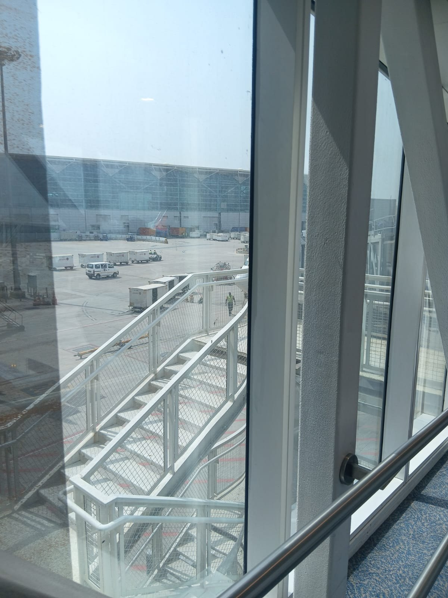
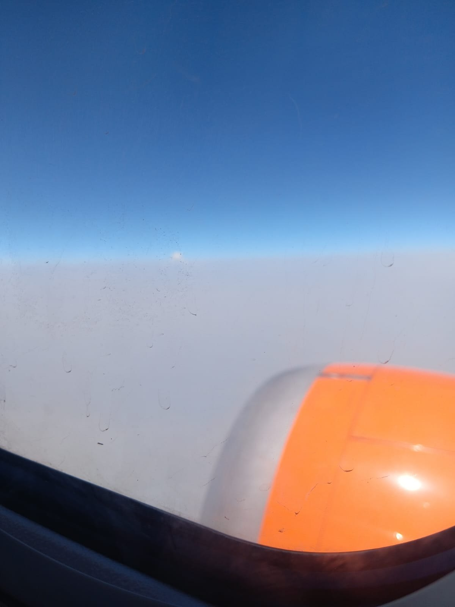
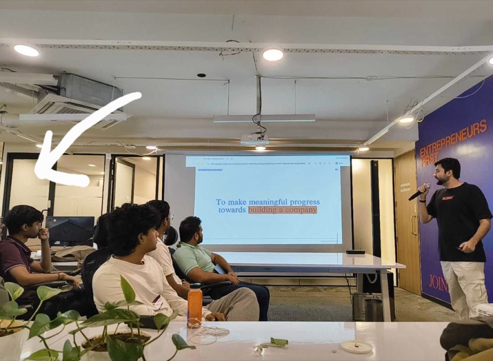
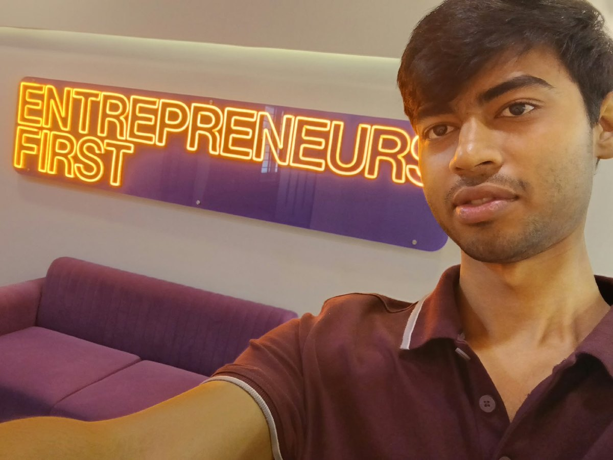

Divyansh Chauhan
19, on a gap year, from bhagwanpur — a small town in uttarakhand. i build things and then go find people who'll pay for them.
right now that's datak: the cad and engineering simulation data that ai labs need to train models on physical design, and the benchmark i'm building to measure whether any of those models actually understand a part. before it i founded blip ai, took it past $200k in gross sales, and then watched a three-day attack refund a third of it. i was also the first hire at slashy (yc s25), at 18.
the cad benchmark what happened at blip early life
Right now i'm
- building datak. i source, curate and commercialise cad and engineering simulation datasets and sell them to labs training ai on physical and mechanical design — step, iges, parasolid, stl, solidworks, catia and creo geometry, plus ansys, abaqus and openfoam simulation runs with their solver settings and result fields. i run it end to end: writing the design briefs and data specs, building an exclusive network of cad design partners, qa on geometry, labelling and originality, and the manifests and secure delivery that let a buyer trust a dataset they can't inspect by eye. $30k revenue so far, and in negotiation on multi-year contracts worth seven figures in arr across the next two years.
- building a benchmark for cad data on top of it, from a dataset i'm creating myself. every lab training on mechanical design evaluates against whatever data it happens to hold, so no two results are comparable. i want one consistent way to ask whether a model reasons about a part or is pattern-matching on its shape. targeting launch before november. how it's measured →
- then training my own model on it, and raising against that result. the bet is that whoever defines how cad models get measured is best placed to build the one that wins — sell the data, own the benchmark, then train the thing. this part isn't built yet, and i'd rather say so than round it up.
- founder's office @ slashy (yc s25). first hire, joined at 18, work directly with the founder. built the reporting dashboards over live product and campaign data (~50% faster turnaround) and an in-house lead-sourcing + enrichment pipeline in python and c++ across several rest apis — replaced clay and apollo outright and cut cac. the hard part was never the scraping: it was rate limits, partial matches, dupes, and apis that fail quietly and still hand you a 200, so it needed retry and dedupe logic before anyone would trust the output. also own release quality, 100+ issues triaged and closed with engineering.
- pitching at slush in helsinki, nov 16–19 — the biggest startup event in europe. selected for slush 20u20, twenty people under twenty from around the world, run by slush with index ventures, anthropic and sifted. flights and accommodation are on them. first time i'll leave the country. more →
Previously i
- founded blip ai and ran it solo. voice-to-text, a cheaper wispr flow alternative. owned product, pricing, onboarding and distribution, and took it to $206,947 in gross sales and 10,000+ users from ~2m organic views, with no ad budget and no audience to start. then we got attacked, stayed down three days, and 307 refunds took it to roughly $128k net. the whole story →
- ran india gtm @ magic hour ai (yc w24), jul 2025 – may 2026. sized it, picked channels, ran it. automated the whole content and outreach machine in n8n so it ran on a schedule without me. 1,000+ outreach touchpoints, 20+ user interviews, 50+ live threads at once, 200k+ views on linkedin and reddit, and the first paying revenue the company had from india. threw out most of what i'd assumed going in.
- founded aishield at 17. ai content-protection for creators. set product direction, ran discovery, and led two engineers — one ex-amazon, one from a yc-backed startup — through build and launch. onboarded 4+ creators and an agency of 30+, ~10m followers combined. managing people older and more experienced than me, at 17, without pretending to know things i didn't: show up with the customer problem specified, let them own how it gets built.
- built an inbox agent. n8n + gmail api + llm + airtable over oauth and webhooks. watches an inbox, classifies threads, drafts context-aware follow-ups, keeps a tracker current. the naive version double-sends or replies to things it shouldn't — most of the work was retry logic, dedupe keys, and deciding what it's not allowed to send without me.
- did growth and product work with 4+ yc-backed startups, including channel3 and revisiondojo. selected for the young asian programme to pitch at the national university of singapore. round 2, all india dps capstone hackathon.
- grew a youtube channel 0 → 2k subs, and collaborated with animation youtubers with audiences in the millions (lil yash, not your type). first real lesson that attention is something you build on purpose.
The first time i sat on a plane, someone else had paid for the ticket
i'd been shipping things from my room for a couple of years by then. i had never left the state for work.
then entrepreneurs first invited me to their bengaluru office and covered the flight. i was 18. i spent the entire descent with my face against the window. i'd like to say i played it cool. i did not.


the actual shock came after landing. i walked into the room and worked out, fairly quickly, that i was the youngest person in it by a wide margin. everyone else had a company behind them, or a co-founder, or a career they'd quit to be there. i had a laptop and a list of things i'd shipped. the slide said "to make meaningful progress towards building a company."

what i expected to feel was fraudulent. what i actually felt was that the gap between me and that room was made of reps — not of some quality i'd been born without. everyone there had done the thing more times than i had. that was the whole difference. so i went home and did the thing more times.

eighteen months later, slush is flying me to helsinki. i'm aware of how that reads. i'm still slightly suspicious it's real.
More
What building has actually taught me
- distribution is a product decision, not something you do afterwards. the blip features that mattered were the ones i could explain in a one-line reddit post.
- run the cheap version of the experiment instead of reading about someone else's. most growth advice is survivorship bias — a person describing their own company and calling it a rule.
- automate anything you'd otherwise do twice. a workflow on a schedule beats a person who's motivated this week.
- the boring half is the moat. retry logic, dedupe keys, rate limits, and knowing what a system is not allowed to do are what make it safe to leave running. i learned this twice — once building pipelines, once when blip went down.
- being the youngest person in the room is only a problem if you treat it as one. nobody checked my age before asking whether the number in the dashboard was right.
- ask for help publicly and early — but the answer usually comes from someone you already know. i sat on the blip outage a full day before posting, and the day cost more than the embarrassment would have. the fix came from a colleague who lent me his own api account, not from the 3,372 strangers who saw the post.